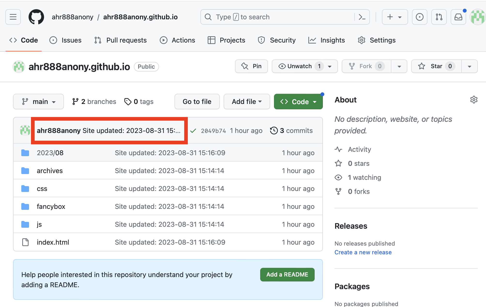

使用hexo遇到的坑
在初次使用hexo时，遇到一系列问题。现在开启这篇文章记录之。
1. git提交用户与git登陆用户不一致问题
在实际操作时，发现GitHub提交项目的用户仍为之前git config --global设置的用户及邮箱，并没有采用git config --local设置或_config.yml文件中配置的参数，实际登陆用户为--local设置的那个，采用的ssh密钥也是这个用户。
其中_config.yml的相关配置如下：
deploy: |
出现的问题如图：

上图框中的用户名是问题修复后的，修复前为其他用户。
问题产生的原因是hexo在第一次部署后会记录用户相关参数，保存在了.deploy_git文件中，之后一直延续之，故不论后续怎么修正都仍然采用的之前保留的用户。
解决办法是在添加局域用户名后，删除本项目的.deploy_git文件：
$ rm -rf .deploy_git |
然后重新部署即可。
2. typora与hexo的图片引用地址不一致问题
在显示上面那张图片时存在hexo图片不显示的问题：
图片保存地址为：
source/_posts/{文稿名称对应的资源文件夹}/{引用图片}
在typora中的相对位置需要指定图片文件的上层目录才可以引用、即需要指定：

才可显示。
而hexo按照教程（ 资源文件夹）设置后，不需要指定{文稿名称对应的资源文件夹}。
在知乎上找到了解决方案。需要更改
node_modules --> hexo-asset-image -->
index.js
第58行的代码：
$(this).attr('src', config.root + link + src); |
改为：
$(this).attr('src', src); |
最后在*.md文件中引用图片时还是需要指定没有.md文件名命名的文件夹作为索引路径，即：

然后执行：
$ hexo clean && hexo g && hexo s |
即可在本地浏览器看到正确的图片。
3. hexo每次部署后均需要重新配置自定义域名
在每次新写文章之后，执行了：
$ hexo clean && hexo g && hexo d |
结果发现GitHub上的项目历史commit记录丢失，且在Settings -> Pages -> Custom domain中配置的自定义域名也丢失，需要再次配置才能访问。
估计是先执行了clean操作的原因。
本文完成后，再次尝试部署，这回在部署前不clean:
$ hexo d -g |
访问网页发现仍然出现域名解析丢失的问题，GitHub上的用户自定义域名又变为了空白。
出现该问题的原因是域名解析的操作是在GitHub上进行的，在Custom domain中绑定用户自定义域名后，会在GitHub项目库根目录上生成一个名为CNAME的文件，该文件中有域名信息、本地没有。如果在本地执行部署，自然不会有该文件、从而强制推送到远端时会导致远端的该文件丢失。
解决办法为在本地hexo博客的source文件夹下新建一个CNAME文件，写入自己的域名，再次部署即可。
4. 更改主题
由于想给hexo博客增加一个访问量统计功能，找到的介绍均提到主题目录下还存在其他文件，但是我上面根据官网默认安装的在themes文件夹下是没有东西的，故需要安装以进一步增加统计功能。
查询到更改（或沿用默认的landscape）主题的方法很简单，直接在官网主题页面上查找到自己喜欢的，进入其GitHub项目直接克隆到本地的blog/themes/文件夹下即可，即：
$ cd ~/blog/themes |
由于本地采用了多个git账户，为了进行区分，在~/.ssh/config文件中分别配置了不同用户的ssh密钥，在克隆项目时需要指定用户，假定配置的为：
Host git_a |
上述的代理端口有差别是为了区分两个用户的流量。假定我们使用的是git_b账户，克隆的是Morgan主题，则需要对地址进行修正，先进入~/blog目录（即博客根目录），执行如下命令：
$ git clone git@git_b:hpcslag/hexo-theme-morgan.git themes/tocas-ui-morgan |
即将hexo-theme-morgan.git克隆到~/blog/themes/tocas-ui-morgan文件夹。
在实际使用的时候发现该主题不是很好看，且对不蒜子统计不是很友好，决定改为使用最广泛的nexT主题，当然个人感觉默认的landscape也挺不错。鉴于很多人说netT功能多、可拓展性强、对搜索引擎的支持更好，且其GitHub的star数量为hexo主题类最多的，故采用之。
执行克隆操作安装：
$ git clone git@git_b:iissnan/hexo-theme-next.git themes/next |
考虑到next使用有点复杂，考虑后续使用之。暂时仍然使用默认的landscape主题。